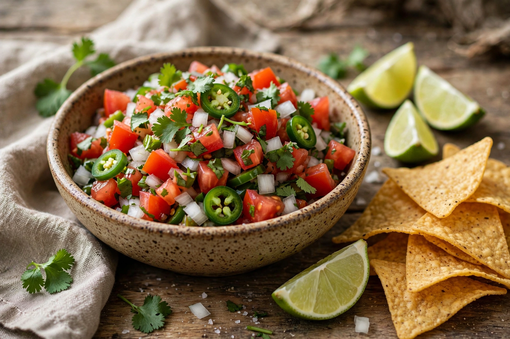

From Wikipedia, the free encyclopedia
| Pico de gallo | |
|---|---|
| Alternative names | Salsa fresca, salsa cruda, salsa bandera |
| Type | Salsa / condiment |
| Place of origin | Mexico |
| Main ingredients | Tomato, onion, chili (jalapeño or serrano), cilantro, lime juice, salt |
Pico de gallo (Spanish for "rooster's beak"), also called salsa fresca, salsa cruda, or salsa bandera ("flag sauce", for its red, white, and green colours of the Mexican flag), is a fresh, uncooked chunky salsa of Mexican cuisine made from chopped tomato, onion, and serrano or jalapeño peppers, with salt, lime juice, and chopped cilantro.
Unlike blended or cooked salsas, pico de gallo is always made from raw ingredients cut by hand, giving it a chunky texture and a lower liquid content. It is served as a topping or accompaniment for tacos, grilled meats, eggs, beans, and tortilla chips, and made fresh it keeps only briefly — the tomatoes soften and release their juices within hours.
Regional variants add cucumber, radish, avocado, mango, or jícama; in Yucatán a version with bitter orange and habanero is common. The origin of the name "rooster's beak" is uncertain: suggestions include that the salsa was eaten by pinching it between thumb and forefinger (like a beak), that the chopped chilies resemble feed, or that serrano peppers are shaped like a beak. In much of Mexico the name also covers a quite different preparation — a salad of chopped fruits and vegetables such as jícama, cucumber, and orange seasoned with chili powder and lime.
Salsa (sauce) · Mexican cuisine · Guacamole
